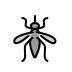

How animals cause
human deaths
Mosquitoes and dogs are far apart in the ranking, but their estimates share an important feature. Both largely reflect deaths from infections. Group the animals by how deaths occur, then open any row to see how its estimate was made.
Explore the estimates
Hover or select an animal to magnify nearby estimates and see the evidence.
Each animal appears once, based on the cause emphasized in its source. The same scale applies to every group.
Compare an animal with mosquitoes

MOSQUITOES760,000estimated deaths / yearas many deaths
in these estimates
Mosquitoes cause deaths by transmitting diseases. Global death totals reflect both exposure and harm, so this comparison describes the overall burden.
What counts as a death?
The estimates include infection, envenoming, allergic reactions and injuries. Humans are included for deaths from violence and conflict. The original chart uses 2023 as its reference year, with some estimates drawing on other years.
Read the estimates with care.
Values are rounded and cover selected groups. An arrow and “>” mark a published lower bound. Zoom uses the displayed figures to choose rows and changes the shared axis.